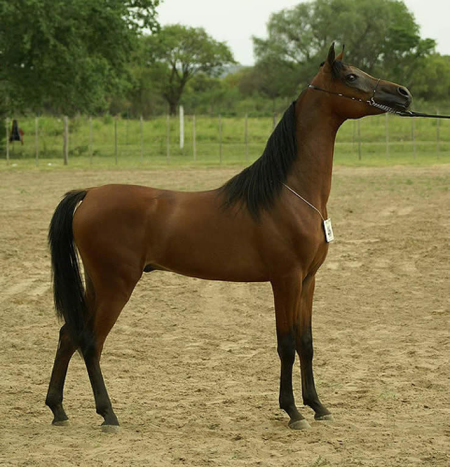
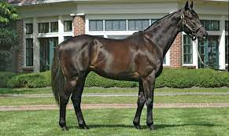
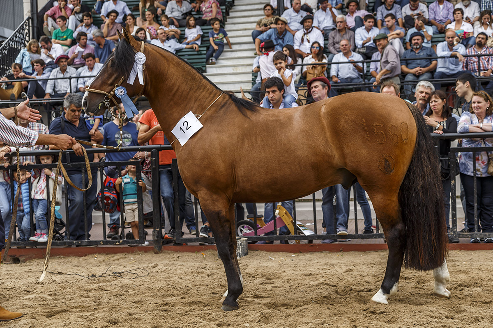
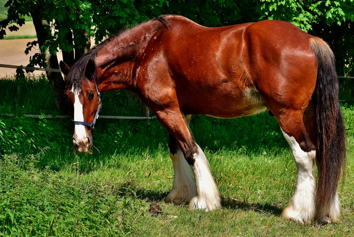
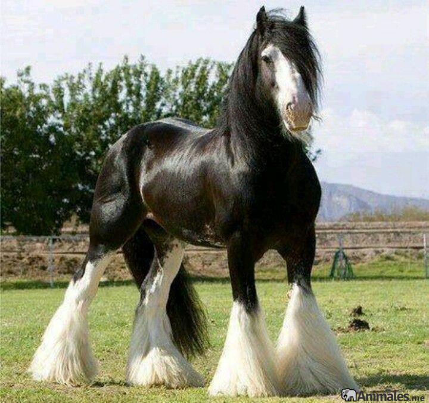
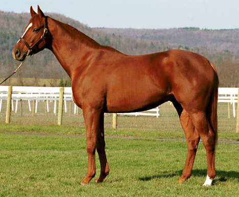

Razas
Raza Arabe
Origen:
El caballo Arabe proviene del desierto de Nedj. Se mantuvo en un ambiente aislado y en pureza
Morfologia:
El perfil fronto-nasal es en general subconcavilineo. La alzada es de 1,30-1,35 metros, peso de 25-500 Kg. Oreja cortas, con base ancha, separada entre si. Ollares bien separados, grandes y dilatables; ojos grandes y expresivos, generalmente oscuros y de forma ovalada. Quijada amplias. La cabeza es chica de forma piramidal, cuello largo, flexible y elastico presenta una convexidad superior y cierta concavidad en el borde inferior. En el tronco, el cuello es grueso, la cruz es mediana, dorso corto y lomo bien corto. La grupa es horizontal (15-20°), insercion de cola alta, perimetro toracio de 1,80 metros, buen desarrollo del tren posterior. Es resistente a la fatiga y apto para recorrer distancias largas, de gran temperamento, es nervioso pero muy docil. Los pelajes principales son el tordillo, el zaino, el oscuro y el alazan, segun un proverbio arabe "el mas rapido es el alazan, el mas resistente el zaino, el mas brioso es el oscuro y el mas docil el tordillo"
Aptitud:
Es un caballo de silla, fue usado para mejorador de razas, dandoles coraje, resistencia, rusticidad, calidad, inteligencia, docilidad y belleza.
Variedad:
Una variedad es el Sirio, que tiene mayor alzada (1,35-1,40 m). Otra variedad es el Persa de alzada mas alta (1,40-1,45 m) este es mas veloz y menos rustico que el sirio.
Raza Berberisca
tiene importancia en la Argentina por ser uno de los antecesores de la raza Criolla, a traves de los caballos españoles.
Origen:
Tuvo su origen en el norte de Africa (Libia, Tunez, Argelia y Marruecos)
Conformacion:
La cabeza es alargada, angosta y con perfil recto o convexo. La frente es mas chica que la cara. Los ollares son medianos. La orejas son mas largas que las del arabe, y implantadas mas abajo. El cuello es largo, grueso y recto en sus bordes superior e inferior, la cruz es bien marcada, el dorso y lomo son medianos, la grupa es corta y el anca es llovida, la insecion de la cola es mediana o baja, la espalda inclinada, pecho angosto y torax estrecho y alargado. La alzada es de 1,50-1,60 m. Los pelajes mas importantes son tordillo, bayos, zainos, aunque algo descoloridos. Presenta dos variedades; del desierto, mas rustico; del mediterraneo.
Aptitud:
Es un caballo de silla, sobrio y rustico. Veloz en carreras corta y resistente en marchas largas.
Criolla
Origen:
Su origen se debe a dos influencias:
Conformacion:
Animal compacto, de buen desarrollo muscular y agil. Perfil fronto-nasal recto o subconvexilineo. Buen caracter, sanguineo, aunque docil. Alzada de 1,40-1,48 m para machos adultos y 2 cm menos para las hembras. El cuello es de largo mediano, convexo en su borde superior y casi recto en el inferior, cruz musculosa y poco prominente, dorso de largo mediano y lomo corto. Grupa oblicua, cola de insercion media. Pecho ancho y musculoso con encuentros bien separados. Tronco y abdomen toneliformes.
Pelajes:
A excepcion del pintado y el tobiano se aceptan todos los pelajes, con preferencia gateados o bayos
Aptitud:
Presenta una alta resistencia y rusticidad, dada por su origenes.
Percheron
Origen:
Segun las cronicas antiguas, el origen de la raza se remonta al año 732, cuando los aranes fueron derrotados en la batalla de pontiers, los caballos arabes fueron tomados por los franceses, distribuyendolo por todo su pais.
Conformacion:
Prensenta cabeza corta y ancha, con frente amplia. El cuello es largo mediano y no muy grueso. Dorso y lomo de largo mediano, pero ancho y musculoso, grupa amplia y redondeada con dirrecion de inclinada a llovida, cola gruesa de insercion baja y torax cilindricos. Se presentan dos variables:
Aptitud:
Como se menciono antes tenemos dos variedades, el Postier; tiene una aptitud de tiro al trote, es utilizado en la actualidad por su conformacion y precocidad para la produccion de carne, tambien para hibridaciones obteniendo mulas de tiro. Y el Grande; originado de animales pesados ingleses y yeguas con aptitud de tiro pesado, ambos son usados para trabajos agricolas.
Shire
Origen:
Es el caballo mas grande de las razas pesadas, descendiente del caballo de guerra ingles medieval
Conformacion:
Equinos voluminosos de mucha fuerza y peso, predominan los pelajes zainos y colorados. Su alzada esta entre 1,65.1,90 m y su peso supera holgadamente los 1000 Kg, tambien tiene su centro de gravedad mas cerca del suelo que otras razas. Su perfil fronto-nasal es convexo, tiene la cara ancha y de expresion bondadosa, de su maxilar inferior salen pelos largos que se asemejan a una barba. Su cuello tiene el borde superior convexo e inferior recto. Presenta grupa partida, muy voluminosa y el abdomen toneliforme, en general es un animal muy musculoso.
Aptitud:
Su aptitud es de tiro pesado al paso
SPC (Sangre Pura de Carrera)
Origen:
Se originan en inglaterra a partir de la importancia de padrillos arabes y berberiscos, y yeguas semipesadas inglesas
Conformacion:
La primera pauta de seleccion fue desde siempre la velocidad, permitiendo transmitir su descendencia solo a los mas aptos. Su alzada actual es de 1,60-1,65 m, su peso promedio es de 450 a 550 Kg. El perfil fronto-nasal es recto o subconvexilineo, de cabeza chica y descarnada, cara recta con frente ancha y orejas chicas muy moviles, su garganta es fina, el cuello recto largo y flexible con borde superior recto. El dorso es corto, el lomo largo, la intersecion de la cola es intermedia, la cruz es marcada y la grupa es inclinada u horizontal dependiendo el biotipo, si corren distancias largas, medianas o cortas. Los pelajes son zaino, alazan y tordillo.
Aptitud:
Es el equino deportista por excelencia, siendo apto para cualquier deporte, siempre que tenga un buen entrenamiento y este acordes a su conformaciones. Segun su alzada se los puede clasificar en:
Se considera a la raza SPC como la raza mejoradora de todas las razas de silla.